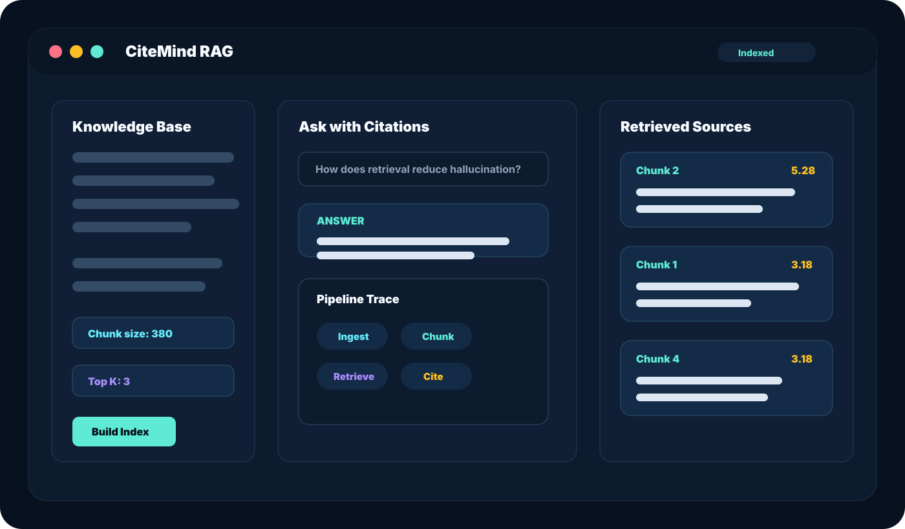

Ingest
Paste raw notes, docs, product specs, or research snippets into the browser.
Local-first RAG Studio
CiteMind RAG is a browser-based retrieval demo that chunks text, ranks relevant context, and generates an answer with source citations.
一个本地优先的 RAG 演示项目：文档切块、相关片段检索、引用回答，全部在浏览器中完成。

RAG Studio
粘贴知识文本，输入问题，查看检索片段和引用来源。
Answer
Pipeline
清晰展示 RAG 的核心链路，适合演示、教学和产品原型。
Paste raw notes, docs, product specs, or research snippets into the browser.
Split text into overlapping context windows that can be scored independently.
Rank chunks using local lexical vector scoring with query-aware weighting.
Produce a concise answer with visible source cards and confidence signals.
Features